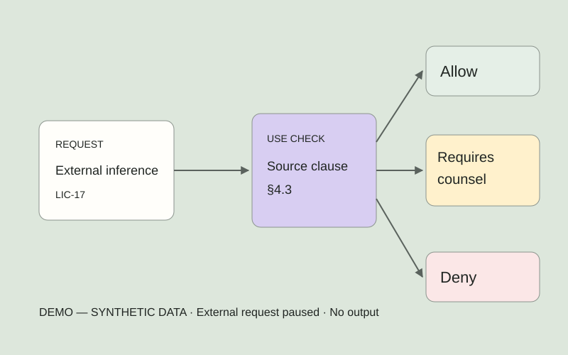
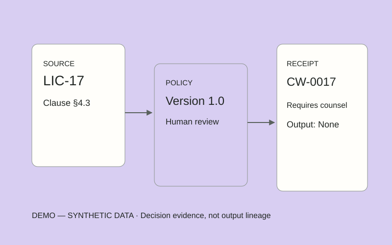
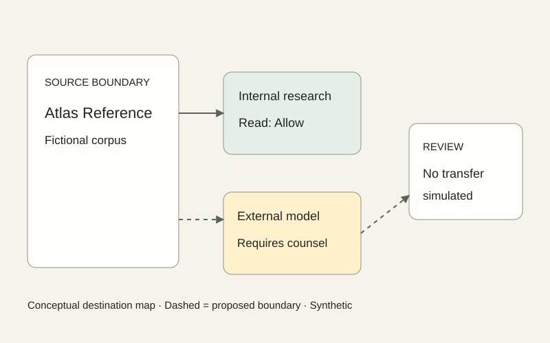
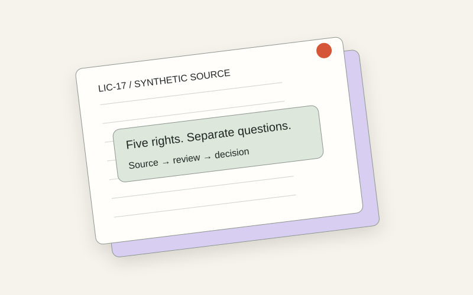
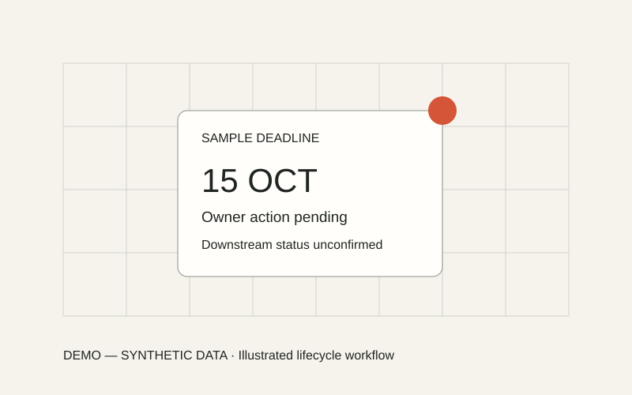
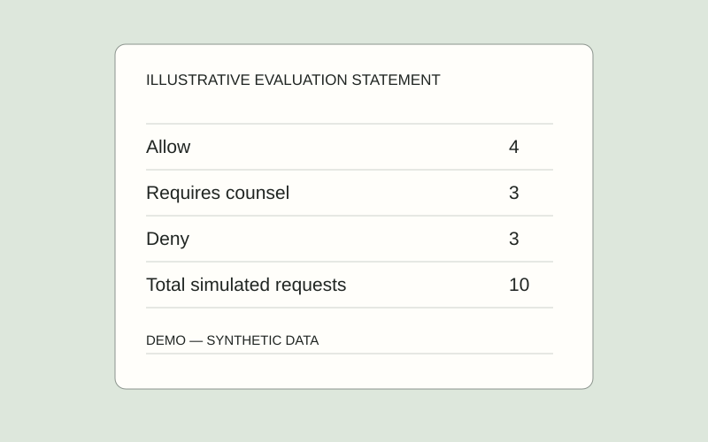
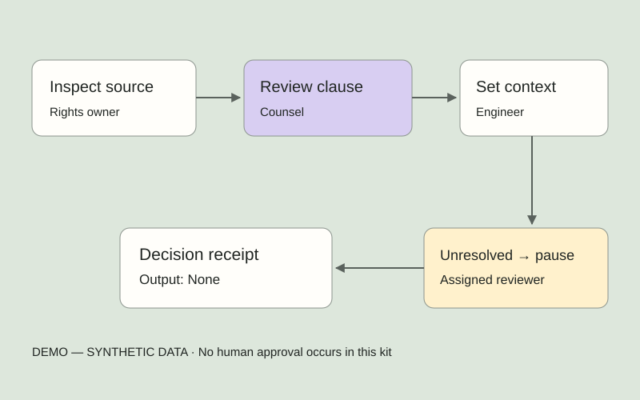

Image feature / Rights Desk
Start at the clause.
Original material artwork introduces the source before the readable record.
Consent Waypoint / Brand system 2.0
Evidence in Motion. A complete visual language for keeping rights, context and human review together.
01 / Evidence in Motion
Two opposing brackets define a source boundary. A single coral waypoint marks the question to inspect.
Keep one waypoint diameter clear on all sides. Never stretch or add a glow.
Outlined wordmarks, editable lockup, monochrome, reverse, compact, PNG and ICO exports.
Compact lockup ↓02 / Evidence in Motion
Coral attracts attention. Decision colors carry their own meaning. Select a swatch to copy its value.
03 / Evidence in Motion
Manrope for the conversation. IBM Plex Mono for the record. Local fonts and original license notices are included.
04 / Evidence in Motion
A consistent underlying grid lets the surface, media and composition change between chapters.
| Width | Columns | Margin | Gap |
|---|---|---|---|
| ≥1200 | 12 | 64px min | 24px |
| 768–1199 | 8 | 32px | 24px |
| ≤767 | 4 | 20px | 16px |
Card padding, desktop / mobile.
Copy to its supporting visual.
Chapter padding, desktop / mobile.
05 / Evidence in Motion
Tables stay flat. Evidence can lift from its source. Overlays sit above the active workbench.
none0 8px 24px #202522140 20px 64px #2025221f0 24px 80px #2025222e06 / Evidence in Motion
Select a background to see where it belongs. The typography and evidence frame keep the family connected.
E1 / PAPER FIELD
Home, company and workshop introductions. Quiet space for a strong proposition.
07 / Evidence in Motion
Illustrations, image treatments, structured records and a second face. Interactions reveal context without moving the reading target.
Image feature / Rights Desk
Original material artwork introduces the source before the readable record.

Illustrated mechanism / Review
A branch diagram makes the difference between permission and review visible.
Operational record
◷ Requires counsel
External inference · source §4.3
Owner: Mira Lane (fictional)
Next action: review destination
Evidence flip / Explicit activation
Hover hints at depth. Tap, Enter or Space on the control turns the card. Essential status stays outside both faces.
Requires counsel · Output: None
Summary / LIC-17
DEMO — SYNTHETIC DATA
08 / Evidence in Motion
Hover, keyboard focus and press are distinct. Loading and empty states explain what is happening.
48px target / 8px radius
180ms fill + arrow
Visible ring / no layout shift
1px press / stable label
Toggle changes aria-pressed
Requires an approved source
Static loading-state sample
Quiet secondary emphasis
Nothing was sent.
No approved source metadata yet.
09 / Evidence in Motion
Choose a source, then change the requested use and destination. The result stays tied to a fictional clause and a visible next action.
LIC-17
| Right | Rule |
|---|---|
| Read | Internal research allowed |
| Embed | Approved internal index only |
| External inference | Requires counsel |
| Retain | Duration requires explicit review |
| Redistribute | Denied |
Source ID identifies a fictional document; request outcome is separate from review status and access entitlement. Allow is permission in this fixture context, not execution. Requires counsel pauses the request. Deny blocks it. All outputs here are None. Missing conditions never imply permission. Reset restores in-memory defaults.
10 / Evidence in Motion
Original editable visuals show policy context, evidence references and source destinations. Location is not part of the product story.





11 / Evidence in Motion
The product flow follows a request. The buyer flow follows the agreement to evaluate one source family.

Explain the distinction between access entitlement and permitted use.
12 / Evidence in Motion
Ten fixed synthetic request events demonstrate reporting. Select a bar to filter its records. These are evaluations, not usage or performance results.
| Event | Source | Decision |
|---|
Every chart names its unit, source, sample date and denominator. Counts reconcile with its table. Unknown stays unknown. Decision counts never become savings, customer traction or legal assurance.
13 / Evidence in Motion
Twenty-six original SVG icons. 24px viewBox, 1.75px rounded strokes, 16 / 20 / 24 / 32px display sizes. Select an icon to download it.
Recognizable LinkedIn and Crunchbase icons are included as separate monochrome specimens. Profile links remain unconfigured.
LinkedIn graphic: Bootstrap Icons, MIT. Crunchbase graphic: Simple Icons, CC0. Brand marks remain trademarks; library licenses do not imply brand approval.
14 / Evidence in Motion
A bounded folio shifts from intake to inspection to decision evidence. The scene is a working motion specimen for the future scroll story.
A stable source folio enters the scene; the claim stays readable.
LIC-17 / Synthetic
A paper aperture can open into the next chapter. Text loads first; native scroll remains available.
At most two short pinned chapters on the eventual Home. None below 1024px or on short screens.
Reduced motion uses complete stills, instant tabs and no parallax. User-selected context always persists.
15 / Evidence in Motion
Pricing and statistics use the same evidence discipline as the product. These are proposed commercial and scope specimens.
Proposed modules
Separate use rights
Source family in initial pilot scope
One-family pilot / hypothesis
Potential ongoing engagement / hypothesis
Per governed source family. Subject to pilot findings and agreed inclusions.
Pilot duration, record limits, contracting party, counsel engagement and legal-review costs remain to be agreed. Proof, Signal and Report are proposed directions, not automatically included paid plans.
16 / Evidence in Motion
Fictional placeholders for layout exploration. No customer testimonials yet.
“The useful question is what this source permits for this specific use.”
Example buyer role: Data governance lead
17 / Evidence in Motion
Sign-in and workshop form specimens are local previews. They collect no credentials, submit nothing and store no form values.
Access preview
No account is needed for these fixture examples. Authentication is not connected.
Enter synthetic workspace →Visible labels, retained input on errors, a consent checkbox and honest completion feedback.
No password or SSO collection18 / Evidence in Motion
The documents, assets and specimens travel together. Production implementation and real customer validation remain separate milestones.